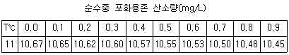

수산양식산업기사 (2004-08-08 기출문제)
1과목: 어류양식
1. 식용 잉어 치어 사육시 선별을 하는 주 이유는?
- 품질이 나쁜 것을 골라내기 위하여
- 산란 부화를 마친 어미를 분리시키기 위하여
- 붕어 기타 잡어류를 골라내기 위하여
- 큰 것과 작은 것을 분리시키기 위하여
(정답률: 알수없음)

2. 사료 성분중의 지방과 비타민류의 산화방지를 위해 사용하는 천연 항산화제는?
- 레시틴
- α -토코페롤
- 시트롤산
- NDGA
(정답률: 84%)
3. 송어 사육시 양식장 용수로서의 적당한 용존 산소량의 최저 기준은?
- 3 mg/L
- 5 mg/L
- 7 mg/L
- 11 mg/L
(정답률: 77%)
4. 틸라피아의 수컷 생산 방법이 아닌 것은?
- 선별
- 잡종
- 성전환
- 초고밀도 사육
(정답률: 72%)
5. 미꾸라지 인공채란시 뇌하수체 주사액의 1마리 당 적정량은 얼마인가?
- 1 ㎖
- 0.1 ㎖
- 10 ㎖
- 2 ㎖
(정답률: 77%)
6. 순환여과양식에서 여과조에 석회 또는 패각을 넣는다. 그 이유는?
- 여과율을 높여 준다.
- 물의 산성화를 막아 준다.
- 여과 Bacteria의 번식을 돕는다.
- 여재로서 구하기 쉽다.
(정답률: 50%)
7. 참돔은 부화 후 어는 정도 지나면 운동력과 시각이 발달하여 먹이를 선택적으로 잡아 먹을 수 있는가?
- 2~3일
- 3~4일
- 5~6일
- 7~8일
(정답률: 알수없음)
8. 물벼룩 발생에 적당한 못은?
- 사니질(砂泥質)의 못으로 물이 비교적 잘 빠지는 곳
- 점토질의 못으로 물이 잘 빠지지 않는 곳
- 사질의 못으로 물이 잘 빠지는 곳
- 풍부한 수량으로 항상 유수(流水)되는 곳
(정답률: 70%)
9. 뱀장어 양어장(양만장)에 있어 물만들기란?
- 물이 맑게 되도록 유지하는 것
- 수초가 적절히 자라도록 하는 것
- 식물 플랑크톤이 잘 발생할 수 있도록 하는 것
- 동물 플랑크톤이 잘 발생할 수 있도록 하는 것
(정답률: 60%)
10. 순환여과식 사육장치의 구성요소가 아닌 것은?
- 사육조
- 침전조
- 생물 여과조
- 원영지
(정답률: 알수없음)
11. 뱀장어에게 공급하는 주된 인공사료의 형태는?
- 가루
- 반죽
- 펠릿
- 크럼블
(정답률: 60%)
12. 은어가 가장 잘 먹고 또 잘 자라는 수온은?
- 13∼14℃
- 15∼19℃
- 20∼25℃
- 26∼28℃
(정답률: 55%)
13. 채넬메기의 인공 부화시 부화 수온에 따른 부화 소요일로 가장 적합한 것은?
- 수온 19℃에서 10일, 30℃에서 3일
- 수온 20℃에서 11일, 30℃에서 4일
- 수온 21℃에서 10일, 30℃에서 5일
- 수온 22℃에서 11일, 30℃에서 6일
(정답률: 55%)
14. 종묘수송 방법 중 단수하여 수송이 가능한 것은?
- 방어의 치어
- 송어 발안란
- 참돔의 치어
- 은어의 치어
(정답률: 알수없음)
15. 자연상태인 바다에서 넙치 산란기로 가장 적당한 것은?
- 1월경
- 3월경
- 5월경
- 7월경
(정답률: 62%)
16. 인공채란 방법 중 개복 채란을 하는 어종은?
- 송어
- 미꾸라지
- 초어
- 연어
(정답률: 64%)
17. 봄철 방어치어를 채포수집하여 수용시 제일 우선되는 작업은?
- 먹이를 준다.
- 선별하여 수용한다.
- 소독약으로 예방치료를 한다.
- 배설물을 제거한다.
(정답률: 72%)
18. 다음 중 환경 수질 오염에 대하여 가장 강한 것은?
- 이스라엘 잉어
- 뱀장어
- 틸라피아
- 방어
(정답률: 73%)
19. 자연상태의 지수에서 잉어가 주로 산란하는 시간은?
- 오전
- 오후
- 초저녁
- 새벽
(정답률: 알수없음)
20. 다음 중 넙치 전장 10cm, 체중 10g을 사육하고자 한다. 이 때 적당한 양성 밀도는?
- 800 마리/m2
- 1.2 kg/m2
- 2.0 kg/m2
- 95 마리/m2
(정답률: 24%)
2과목: 무척추동물양식
21. 다음 중 필로소마(phyllosoma)의 부유 유생기를 갖는 종류는?
- 꽃게
- 도화새우
- 우렁쉥이
- 닭새우
(정답률: 87%)
22. 채롱식 양성 방법에 의하여 주로 양식되는 패류는?
- 가리비
- 새조개
- 키조개
- 우럭
(정답률: 77%)
23. 다음의 양식 생물 중 인공 종묘 생산을 하기 위해 어미를 구할 때 암.수의 비를 전혀 고려할 필요가 없는 종류는?
- 소라
- 성게
- 가리비
- 우렁쉥이
(정답률: 70%)
24. 다음 중 먹이 생물로 적합한 내용이 아닌 것은?
- 소화가 잘 되어야 한다.
- 영양가가 충분하여야 한다.
- 운동성이 빨라야 한다.
- 유생이 먹기에 적당한 크기여야 한다.
(정답률: 92%)
25. 피조개의 발생 시 (수온 20℃ 내외) 부유생활 기간은?
- 1주
- 2주
- 3주
- 4주
(정답률: 63%)
26. 다음 중 새우류의 양성장으로 적당하지 않는 사항은?
- 수심이 1∼2m가 적당하다.
- 저질은 자갈질이 좋다.
- 못의 바닥은 수문을 향해 경사진 것이 좋다.
- 도피방지 시설이 필요하다
(정답률: 59%)
27. 굴의 채묘예보 방법 중에서 양식현장에서 가장 이용되지 않는 방법은?
- 부유 유생 분포조사
- 부착 치패수 조사
- 부유 유생의 크기조사
- 생식소 숙도지수 조사
(정답률: 54%)
28. 다음 중 참전복의 성숙기 적산수온은?
- 300∼500℃
- 500∼1,500℃
- 1,500∼3,500℃
- 3,500℃ 이상
(정답률: 56%)
29. 보리새우를 제방식 양성장에서 양성할 때 그 양성관리기간 중에서 가장 위험한 시기를 옳게 표시한 것은?
- 수온 상승기인 7월
- 수온이 가장 높은 9월
- 수온 하강기인 10월
- 수확 시기 전인 11월
(정답률: 72%)
30. 우리나라의 동해안에서 양식하기에 가장 알맞는 전복의 종류는?
- 시볼트전복
- 둥근전복
- 말전복
- 참전복
(정답률: 70%)
31. 대하의 종묘 생산 적기는?
- 5월
- 7월
- 9월
- 11월
(정답률: 37%)
32. 다음 중 수하양성에 의한 굴의 성장이 바닥식 양성방법에 비하여 빠른 가장 큰 이유는?
- 염분이 높기 때문이다
- 빛을 적게 받기 때문이다.
- 물 속에서 유동을 많이 하기 때문이다
- 먹이를 먹는 시간이 길어지기 때문이다.
(정답률: 알수없음)
33. 우리나라산 참가리비의 부유유생이 주로 많이 나타나는 시기는?
- 12∼2월
- 3∼5월
- 6∼8월
- 9∼11월
(정답률: 39%)
34. 다음 중 해삼의 재생력 설명이 맞는 것은?
- 몸통을 종으로 절단하면 재생이 잘된다.
- 소화관의 재생력은 대단히 약하다.
- 몸통을 횡으로 절단하면 몸의 뒷부분의 재생력이 강하다.
- 표피의 재생은 배 부분은 약하다.
(정답률: 70%)
35. 우리나라산 바지락의 서식제한 요인이 가장 큰 것끼리 묶어진 것은?
- 수온, 부유토
- 지반의 변동, 부유토
- 염분, 수온
- 용존산소량, pH
(정답률: 70%)
36. 우리 나라 남해안에서의 진주조개 산란성기는?
- 1∼2월
- 4∼5월
- 7∼8월
- 10∼11월
(정답률: 47%)
37. 다음 중 해산 어패류의 세균성 질병은?
- 솔방울병
- 비브리오병
- 스쿠치카병
- 백점병
(정답률: 42%)
38. 참굴 종묘의 전기채묘 실시 시기로 가장 적합한 것은?
- 수온 상승기의 전반기
- 수온 상승기의 후반기
- 수온 하강기의 전반기
- 수온 하강기의 후반기
(정답률: 80%)
39. 간석지에서 조위망을 시설한 다음 그 안에 종묘를 방양하여 양성하는 패류는?
- 말조개
- 전복
- 대합
- 바지락
(정답률: 84%)
40. 참게 유생단계 중 반저서 생활에 들어가며 공식현상을 하기도 하는 단계는?
- 조에아 4기
- 메갈로파기
- 미시스기
- 치해
(정답률: 67%)
3과목: 해조류양식
41. 김양식장에 비료를 주었을 때 효과가 없는 경우는?
- 김의 퇴색이 조금 보이려고 할 때
- 비료를 일정구역의 면적에 일제히 다량 주었을 때
- 김이 적절히 자랐을 때
- 수온이 5℃ 이하 일 때
(정답률: 72%)
42. 6∼8월 경 김사상체에 호염성 세균에 의하여 발생하는 병해는?
- 황반병
- 적변병
- 녹반병
- 녹변병
(정답률: 50%)
43. 김조가비 사상체의 배양을 위한 채묘시 과포자 붙이기에 가장 적합한 수온은?
- 1∼5℃
- 5∼10℃
- 10∼15℃
- 15∼25℃
(정답률: 50%)
44. 톳 증식을 위한 씨뿌림의 대상이 되는 생식 세포는?
- 유주자
- 수정난
- 배
- 접합자
(정답률: 50%)
45. 파래를 김발에서 구제하는 방법과 상관이 없는 것은?
- 담수처리
- 고노출처리
- 냉장처리
- 저노출처리
(정답률: 알수없음)
46. 환경에 대한 적응성이 크고 형태변이가 많은 김은?
- 큰방사무늬김
- 둥근김
- 방사무늬김
- 참김
(정답률: 알수없음)
47. 채묘 때 광선을 차단하면서 채묘해야 하는 것은?
- 김
- 미역
- 톳
- 홑파래
(정답률: 60%)
48. 미역의 말기배양 기간동안에 갑작스런 조도의 변화로 야기되는 현상은?
- 끝녹음
- 싹녹음
- 배우체 탈락
- 아포체 출현
(정답률: 50%)
49. 다시마의 건조장으로서 가장 좋은 조건은?
- 점토질에 굵은 자갈이 섞여 있는 곳
- 철사질의 억센 모래밭
- 가는 모래밭에 잔 자갈이 많이 깔려 있는 곳
- 흙과 모래가 섞여 있는 곳
(정답률: 알수없음)
50. 냉장(冷藏)김발의 좋은 점이 아닌 것은?
- 양식기간의 연장
- 갯병 발생시 피해 극복
- 해적생물의 구제
- 양식시설의 설치 용이
(정답률: 40%)
51. 미역의 포자엽 고르기에 대한 설명 중 틀린 것은?
- 될수 있는대로 크고 두꺼운 것
- 다갈색이나 흑갈색이면서 가장자리의 색깔이 짙은 것
- 엽체가 황갈색이고 단단하며 점액이 적은 것
- 심한 풍파가 있었던 직후의 포자엽은 좋지 않음
(정답률: 67%)
52. 우뭇가사리의 이식을 위하여 모조를 새끼에 끼워서 돌에 감아주는 작업은 하루중의 어느 시간에 해야 되는가?
- 아침 일찍 끝낸다
- 햇볕이 약한 아침이나 석양이 좋다
- 15시 이전에 마쳐야 한다
- 오전중에 마쳐야 한다
(정답률: 알수없음)
53. 미역의 가이식 과정에서 가장 위험한 때는?
- 물이 가장 많이 나는 때
- 날씨가 나쁜 대조 때
- 소조의 물이 맑은 때
- 대조의 물이 탁한 때
(정답률: 40%)
54. 김의 회전식 채묘를 할 때 물레의 회전속도는 얼마가 가장 적당한가?
- 5 회전/분
- 10 회전/분
- 20 회전/분
- 60 회전/분
(정답률: 50%)
55. 냉동씨발은 입고하기 전에 함수율을 몇 % 정도로 건조시키는 것이 좋은가?
- 40∼60%
- 20∼40%
- 8∼10%
- 15∼20%
(정답률: 알수없음)
56. 다음 김 병해 중 생리적 갯병인 것은?
- 붉은갯병
- 구멍갯병
- 암종병
- 녹반병
(정답률: 55%)
57. 해수 유동상태를 철판산화도법으로 측정하였을 때 철감량이 최소한 어느 정도가 되어야 김어장으로서 가치가 있는가?
- 50mg 이상
- 80mg 이상
- 100mg 이상
- 150mg 이상
(정답률: 알수없음)
58. 지주식 양식에서 보다 뜬 흘림발 양식에서 김의 싹을 빽빽이 부쳐야 하는 근본적인 이유는?
- 도중에 탈락이 잘되므로
- 2차아의 번식이 적으므로
- 해적생물의 부착이 많으므로
- 김의 성장이 빠르므로
(정답률: 67%)
59. 풀가사리의 증식방법이 아닌 것은?
- 투석
- 재생력
- 갯닦기
- 포자(씨)뿌림
(정답률: 29%)
60. 다시마의 어미줄 관리에서 4∼5월에 10m 정도의 깊이에 두는 경우가 있다. 그 이유는?
- 이끼벌레 무리의 부착 방지에 있다.
- 너무 강한 광선을 피하기 위해서다.
- 높은 수온을 피하기 위해서다.
- 색택을 좋게 하기 위해서다.
(정답률: 60%)
4과목: 수산생물
61. 대하는 분류학상 다음 중 어디에 속하는가?
- 구각류
- 열각류
- 유우파우시아류
- 십각류
(정답률: 73%)
62. 강장동물에 속하지 않은 것은?
- 산호
- 해면
- 말미잘
- 해파리
(정답률: 46%)
63. 다음 중 가장 유독한 적조생물은?
- Peridinium sp.
- Chaetoceros sp.
- Gymnodinium sp.
- Skeletonema sp.
(정답률: 75%)
64. 다음 전복류 중 남방종이 아닌 것은?
- 참전복
- 시볼트전복
- 말전복
- 둥근전복
(정답률: 50%)
65. 다음 중 2차 성징이 아닌 것은?
- 정소(精巢)
- 육아낭(育兒囊)
- 추성(追星)
- 혼인색(婚姻色)
(정답률: 47%)
66. 해양에서 종생플랑크톤(Holoplankton)에 속하지 않는 것은?
- 집게의 유생
- 요각류
- 규조류
- 와편모조류
(정답률: 알수없음)
67. 수산생물의 환경에 있어 광선이 수중에 투입될 때 먼저 흡수되는 파장은?
- 녹색
- 청색
- 적색
- 황색
(정답률: 알수없음)
68. 외양에서 서식하는 유영 어류의 주 특성이 아닌 것은?
- 군(School)을 이룬다.
- 스스로 빛을 낼 수 있다.
- 계절회유를 한다.
- 부유생물을 먹이로 한다.
(정답률: 67%)
69. 다음 중 다년생(多年生) 해조는?
- 구멍 갈파래
- 미역
- 참모자반
- 대황
(정답률: 31%)
70. 다음 동물성 부유생물 중 가장 많은 수를 차지하고 있는 대표적인 것은?
- 모악류
- 피낭류
- 요각류
- 엽각류
(정답률: 75%)
71. 고등어는 등쪽이 청색, 배쪽은 은백색이다. 다음 어느 것과 가장 관계가 있는가?
- 경계색
- 보호색
- 혼인색
- 유인색
(정답률: 75%)
72. 다음 어류 중 광선이 성숙억제 효과를 나타내는 어종은?
- 잉어
- 미꾸라지
- 초어
- 은어
(정답률: 54%)
73. 패류 양식장에서 관족으로 패각을 열고 패류의 육질을 식해(食害)하는 수산동물은?
- 성게
- 고동
- 불가사리
- 따개비
(정답률: 67%)
74. 조간대 해조류의 특징이 아닌 것은?
- 협산소성
- 내건성(耐乾性)
- 광염성
- 광온성
(정답률: 60%)
75. 먹이의 소화과정 중 창자에서 분비되는 소화효소는?
- 트리프신(Trypsin)
- 펩신(Pepsin)
- 리파아제(Lipase)
- 아밀라제(Amylase)
(정답률: 46%)
76. 아가미 호흡과 함께 보조적 수단으로 창자 호흡을 하는 종류는?
- 뱀장어
- 가물치
- 미꾸라지
- 망둑어
(정답률: 47%)
77. 게류의 유생변태를 바르게 적은 것은?
- 조에아 - 노플리우스 - 미시스
- 노플리우스 - 메갈로파 - 미시스
- 노플리우스 - 조에아 - 메갈로파
- 조에아 - 메갈로파 - 노플리우스
(정답률: 60%)
78. 다음 중 변태를 하지 않는 생물은?
- 갯지렁이
- 해파리
- 뱀장어
- 오징어
(정답률: 36%)
79. 해양 저서동물 분포에 가장 큰 영향을 미친다고 생각되는 것은?
- 수온
- 염분
- 저질의 종류
- 수소이온농도
(정답률: 40%)
80. 다음 중 연골어류가 아닌 것은?
- 노랑가오리
- 은상어
- 청상아리
- 철갑상어
(정답률: 59%)
5과목: 수질분석 및 양식생물
81. 시료보존중의 미생물 활동을 억제하기 위한 시약을 시료 수에 첨가하면 안되는 것은?
- DO
- BOD
- COD
- 현탁물
(정답률: 60%)
82. 다음 중 독성이 약간 있으며 세포질에 축적되고 이따이 이따이 병의 원인이 되는 것은?
- Pb
- Cd
- Ba
- As
(정답률: 70%)
83. 물속의 용존산소 농도에 영향을 미치지 않는 것은?
- 온도
- 기압
- 불순물의 농도
- 습도
(정답률: 60%)
84. 송어의 복부가 부풀어 오르고, 천천히 헤엄치는 것이 있어 해부하여 보니 위가 심하게 확장되어 있고, 위속에 회갈색의 액체와 기포가 많이 들어있었다면 그 원인으로 생각되는 것은?
- Saprolegnia sp.
- Candidia sp.
- Branchiomyces sp.
- Dermocystium sp.
(정답률: 47%)
85. 해수의 질산염을 측정할려고 한다. 어느 방법으로 하면 좋은가?
- 네슬러시약법
- GR시약법
- 구리카드뮴 환원법
- 인도 페놀시약법
(정답률: 60%)
86. 냉수성 어류의 바이러스성 질병은 치료하기 어려운데 이 질병의 폐사율을 줄일 수 있는 가장 좋은 방법은?
- 약품을 병어에 먹인다
- 병어를 약욕시킨다.
- 수온을 올린다.
- 수온을 내린다.
(정답률: 57%)
87. BOD 3㎎/ℓ , 유량 5 m3/sec인 하천에 유량 6000m3/day BOD 800㎎/ℓ 인 공장 폐수를 방류하려고 할때 이 하천의 BOD를 5㎎/ℓ 이하로 유지하기 위해서는 공장폐수를 몇 % 이상 제거시켜야 하는가?
- 약 81%
- 약 78%
- 약 75%
- 약 73%
(정답률: 31%)
88. 과망간산칼륨은 강한 산화력 때문에 외부기생충이나 아가미 또는 피부에 부착한 세균을 제거하는데 유용하다. 그러나 이 약제의 투약에도 불구하고 효과가 없는 경우가 있다. 그 이유는?
- 고온에 약하기 때문
- 광선에 약하기 때문
- 수중의 유기물에 의해 분해되기 때문
- 수중에서의 용해도가 증가되기 때문
(정답률: 73%)
89. 보리새우의 아가미병 원인은?
- 세균
- 바이러스
- 곰팡이
- 효모
(정답률: 44%)
90. 해수의 pH 변화에 관하여 틀린 것은?
- 해수는 pH 변화에 대하여 완충작용을 한다.
- 식물의 광합성작용이 활발하면 pH는 약간 높아진다.
- 해수의 pH는 약간 알칼리성을 띈다.
- 유화수소(H2S)가 발생하면 알칼리성을 띈다.
(정답률: 64%)
91. Flexibacter columnaris균은 양식어류의 아가미나 지느러미를 부식시킨다. 그 이유는 어떤 것인가?
- 단백질이 많은 지느러미와 아가미에서 잘 자라기 때문이다.
- 약 알칼리성인 지느러미와 아가미에서 잘 자란다.
- 조직이 부드러운 지느러미와 아가미에서 잘 자란다.
- 산소가 풍부한 지느러미와 아가미에서 잘 자란다.
(정답률: 알수없음)
92. 뱀장어의 비타민 B1 결핍증은?
- 체색명화, 신경이상, 아가미출혈
- 체색암화, 유영이상, 지느러미출혈
- 새엽의 곤봉화, 피부의 손상, 위의 팽창
- 복부수종, 안구돌출, 운동력실조
(정답률: 50%)
93. 다음 중 현지측정 항목이 아닌 것은?
- 수온, 기온
- 수색, 외관
- 투시도, 전기전도도
- 염소이온, 알칼리도
(정답률: 46%)
94. 방어에 피부흡충이 기생되므로서 죽게 되는 주된 원인은?
- 심한 출혈로 인해 죽게된다.
- 심한 영양실조로 인해 죽게된다.
- 피부흡충의 독으로 인해 죽게된다.
- 병원성세균의 이차감염으로 인해 죽게된다.
(정답률: 67%)
95. 연어의 입 종양병 원인 바이러스인 헤르페르 바이러스는 몇 ℃ 가 증식적온인가?
- 10℃
- 15℃
- 20℃
- 25℃
(정답률: 알수없음)
96. 양식어류에 기생하는 백점충(Ichthyophthirius)을 구제하기 힘든 이유는?
- 백점충은 내장에 기생하기 때문이다.
- 백점충은 피하나 진피에 기생하기 때문이다.
- 지느러미의 기부에 기생하기 때문이다.
- 아가미의 상피조직에 기생하기 때문이다.
(정답률: 54%)
97. 시료수를 유리병에 넣고 보존해서는 안되는 항목은?
- 용해성 인산
- 질산성 질소
- pH
- 규산염
(정답률: 43%)
98. 담수어나 해산어의 장관에 기생하는 종류가 많은데, 그 중에서 연어류에 기생하는 아칸토세팔루스속의 기생충과 참돔에 기생하는 롱기콜룸속의 기생충이 대표적인 이 질병의 원인충으로 알려져 있다, 무슨 질병에 대한 설명인가?
- 어류의 조충성 질병
- 어류의 선충성 질병
- 어류의 구두충성 질병
- 어류의 흡충성 질병
(정답률: 알수없음)
99. 오염된 시수를 채수하였다. 몇 시간 이내에 분석을 마쳐야 하는가?
- 48시간
- 24시간
- 12시간
- 6시간
(정답률: 알수없음)
100. 다음 표를 보고 11.8℃에서 측정한 용존산소량이 10.10㎎/L 일 때 포화도는 몇 % 인가?

- 100 %
- 약 10.5 %
- 약 48.8 %
- 약 96.4 %
(정답률: 31%)